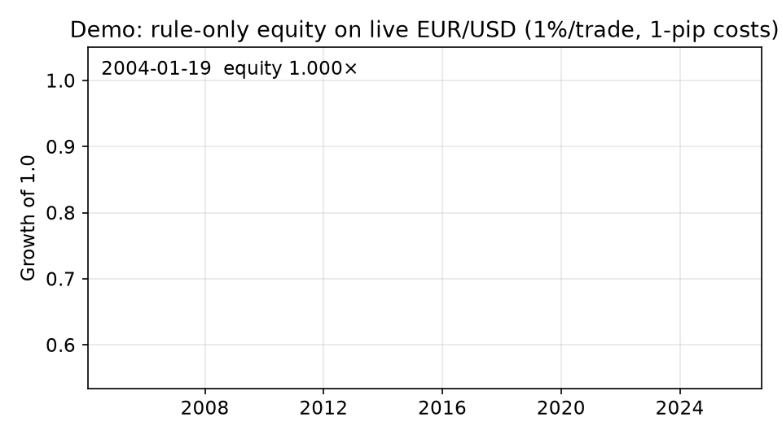
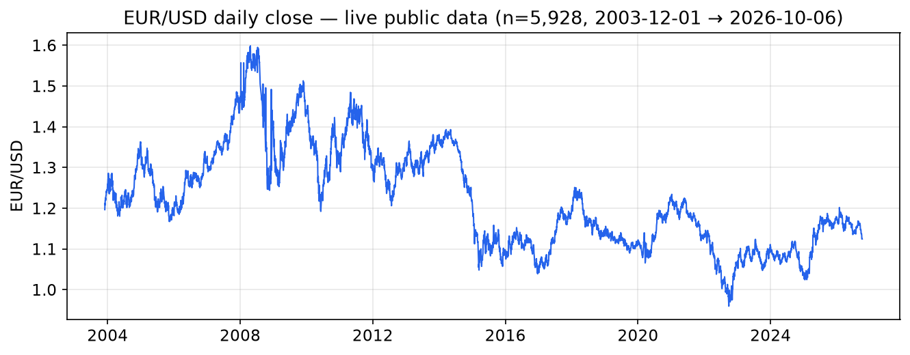
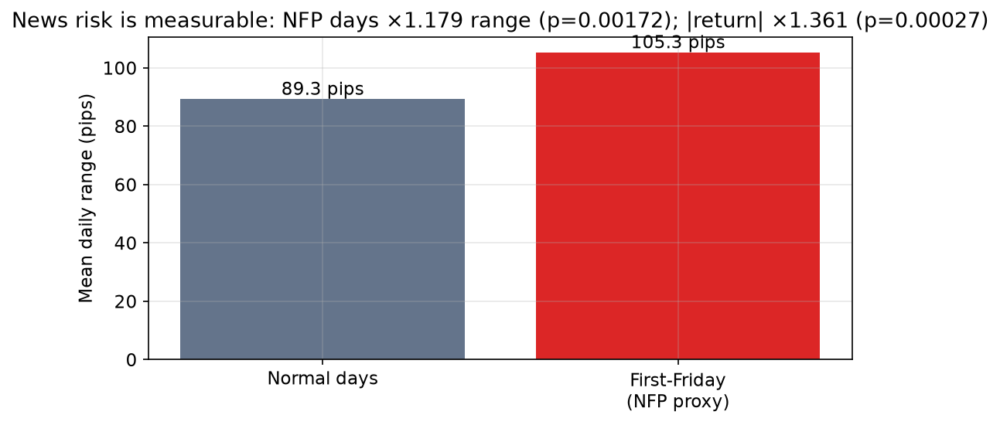
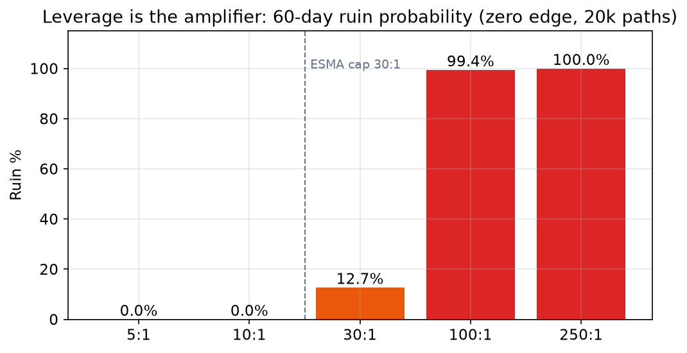
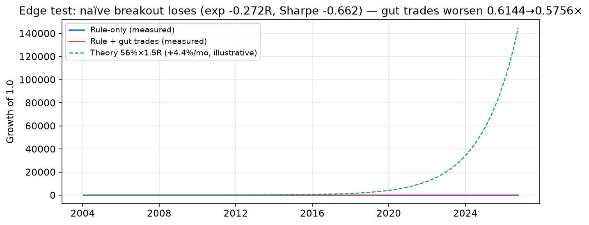
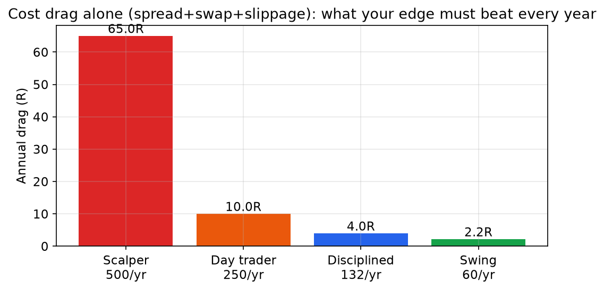

A viral story says a trader climbs from a blown $200 account to $22M under management. We rebuilt every testable claim as a falsifiable experiment and ran it on live public EUR/USD data (2003–2026), BIS 2025 turnover ($9.6T/day) and regulator loss panels. Result: the mechanisms are real, one number is 3× wrong, and the famous edge is much rarer than the story suggests.
Real backtest equity being built bar-by-bar on live data — rule-only vs rule-plus-gut-trades. Generated by scripts/make_figures.py, not hand-drawn.

docker compose run --rm research # re-runs everything, rewrites results/ python3 scripts/make_figures.py # rebuilds every chart + this GIF
100 pips × $5/pip = 250% of account. Ruined before coffee. CONFIRMED.
105.3 vs 89.3 pips range; max 268.9. Daily bars understate the 30-second spike. CONFIRMED.
Ruin jumps off a cliff after 30:1. The cap slows death, not losing. CONFIRMED.
Theory +0.40R is right if the edge exists. Plain breakout doesn't have it. SPLIT.
Every figure below is regenerated from results/results.json + the cached live feed. Re-run and they rebuild.





No jargon. Just the five ideas that decide almost everything.
EUR/USD moving 0.0001 = 1 pip. On 0.5 lots each pip is ~$5. A normal day moves ~90 pips (~$450 at that size). With only $200 behind it, a 40-pip wiggle against you ends the account. That is the whole Level-1 tragedy in one paragraph.
On US jobs Fridays the market moves ~36% more than usual. Trading the same size on those days is like driving the same speed on ice. Survivors trade smaller or sit out.
Every trade pays spread + overnight fees + slippage. Trade 500×/year and you start ~65R in the hole. Trade 132×/year and it's ~4R. Frequency is a tax.
Regulators across Europe publish it: roughly 7 of 10 retail accounts lose money in a year. Assume you will too until a measured edge says otherwise. A backtest with no costs and no news filter is a story, not evidence.
Your order is filled by giant firms that match most flow internally. They don't need you to lose one trade; the spread math wins across millions of trades. Your only way through is a verified, selective edge + tiny risk per trade.
| Who | What they get | Why it matters |
|---|---|---|
| Curious beginner | 5-idea guide + ruin math in plain words | Avoid the $200 lesson; understand costs before funding |
| Strategy skeptic | One-command backtest + negative-result template | Test any guru claim the same falsifiable way |
| Quant student | Sharpe/Sortino/Calmar/SQN/p-value pipeline, no lookahead | Course-ready evaluation scaffold with live data |
| Content creator | Charts + GIF + verdict table, all regenerable | Show evidence instead of screenshots of wins |
| PhD candidate | Pre-registered 3-year extension plan (papers/PHD_PROPOSAL.md + REFERENCES.md) | Walk-forward, tick-level NFP hazard, behaviour panel |
| Risk manager | Leverage cliff + cost-drag tables | Set size limits and news filters from numbers |
Docker or native Python; live fetch, 5 experiments, JSON + summary. No keys.
Shifted signals, costed R-multiples, gut-trade ablation, full risk metrics.
The naïve edge fails significantly — published, not hidden.
This file is the site. Enable Pages and share the link.
git clone <your-fork-url> forex-8-levels && cd forex-8-levels PYTHONPATH=. python3 experiments/run_all.py --outdir results # or: docker compose run --rm research python3 scripts/make_figures.py && python3 -m pytest tests/ -q
Outputs: results/results.json (machine) · results/SUMMARY.md (human) · assets/*.png + demo.gif (visuals).
| Exp | Question | Result |
|---|---|---|
| 01a | Does 0.5 lots kill $200 on 100 pips? | Yes — $500 (250%), call at 40 pips |
| 01b | Are payroll Fridays wilder? | Yes — ×1.18 range, ×1.36 move, p<0.002 |
| 01c | Ruin vs leverage? | Cliff: 0% → 100% from 10:1 to 250:1 |
| 02 | Does a plain 1.5R breakout win 56%? | No — 31%, −0.27R, Sharpe −0.66 |
| 03 | Cost drag? | 4–65R/yr depending on frequency |
| 04 | Market size? | $9.6T/day; retail 2.5% |
| 05 | Hidden patterns? | 36% news premium; no weekday drift; volatility −24% |
/docs, Save.https://<you>.github.io/<repo>/ — this page, with all charts and the demo, is what visitors see.This file (preview.html) and docs/index.html are identical — keep them in sync after edits.
Data says: probably not. ~71% of retail accounts lose yearly. The levels describe a real but rare path. Use this repo to test any strategy before risking money.
The exact private rule isn't public — we test a transparent equivalent and show it loses. The math (+0.40R/trade) is verified, so if someone truly has 56%×1.5R after costs, the monthly numbers follow. Proof of the edge is on the claimant.
Free daily data works everywhere with no keys. Daily results are a lower bound on intraday shocks — the true jobs-day spike is bigger, which strengthens the conclusion.
Correct. This is measurement, not a trading system. Never trade money you can't lose; never hold full size into a jobs release.
preview.html · docs/index.html this page (Pages-ready) README.md full paper (method, tables, references) assets/ charts + demo.gif + screenshot src/ · experiments/ · tests/ code, 5 experiments, unit tests data/ · results/ live cache + generated JSON/summary papers/ PhD proposal + references docker-compose.yml · Dockerfile one-command reproduction